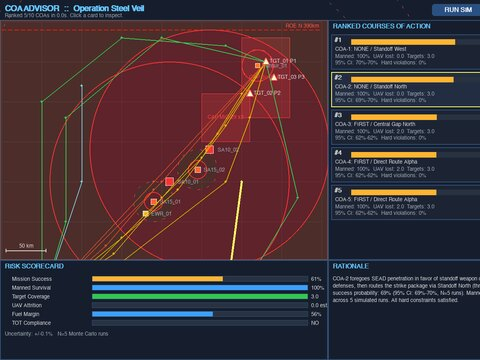

CONCORD: Constraint-Aware Decision Support Framework for Tactical Air COA Generation and Ranking
H. T. Bagci, E. Koyuncu, N. K. Ure
AIAA SciTech Forum, 2027 (to appear)
H. T. Bagci, E. Koyuncu, N. K. Ure
AIAA SciTech Forum, 2027 (to appear)
Generates candidate air-mission plans, scores them under stochastic threats with Monte Carlo simulation, and ranks them against explicit hard and soft constraints, with a readable rationale for each choice.